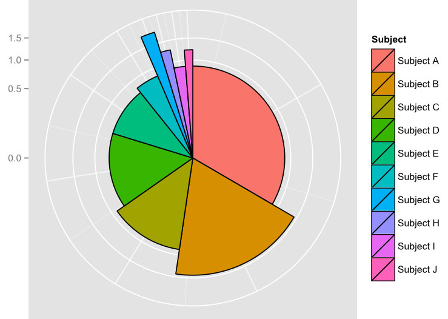

I am a highly driven, results-focused Professional Math Instructor, successful in building
students’ mastery of Math through all UK stages up to university level. Adaptable and
resourceful, versed in secondary and college preparatory examinations and with a proven
track record of success. Proficient and knowledgeable about protocols surrounding working
with younger children. Extensive knowledge in data analysis/statistics, combined with a
meticulous eye for detail. Clear and logical mind with a practical approach to problem solving
and drive to see tasks through to completion.
I am also currently in the process of completing a data science bootcamp where I am honing my skills in statistics,
programming, and data visualization. I am eager to apply my learning to real-world data problems and excited to continue building
my expertise in the field. This portfolio showcases my projects and the skills I have developed so far, and I am confident that it demonstrates
my potential to make a meaningful impact as a data scientist. Thank you for taking the time to visit my portfolio!

A data visualization asigment project with an earthquake dataset. In this project, I analyzed and visualized a large dataset to uncover patterns, trends, and insights. I used Python and its data analysis and visualization libraries such as Pandas, Matplotlib, and Seaborn to manipulate, analyze and present the data in an effective and meaningful way. The visualizations were designed to effectively communicate key findings and insights to a non-technical audience. This project demonstrates my ability to work with large datasets, my understanding of data analysis and visualization techniques, and my ability to present complex information in a clear and understandable manner.
ext-Based Adventure Game: In this project, I developed a simple text-based adventure game using Python. Players are presented with a series of choices that determine their path through the game. The game was created using basic programming concepts such as conditional statements and user inputs, and provides a fun and interactive experience for players. This project showcases my ability to write basic Python code to create a functional and engaging game, and my understanding of programming concepts such as control flow and user inputs.
Dice Rolling Simulator: In this project, I developed a simple dice rolling simulator using Python. The project was created using basic programming concepts such as loops and random number generation. This project showcases my ability to write simple Python code to create a functional simulation, and my understanding of programming concepts such as loops and random number generation.